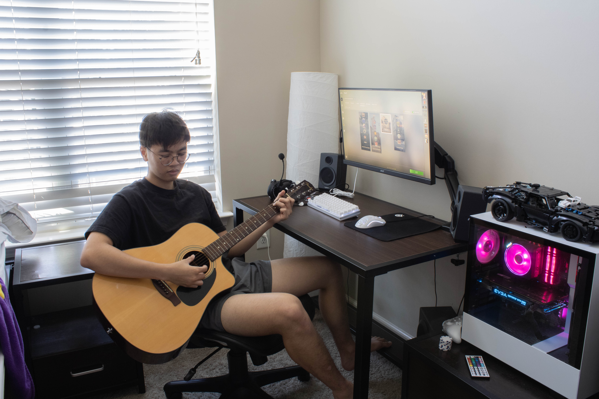

MENU
Timmy

Taken in 2023 for a digital photography class, this image is one of my favorite from my final collection. The collection was to capture the personalities of my family and friends' computer setups. Featuring the user, my cousin, Timmy, the image take places in his apartment room with various items that would characterize him.
Return